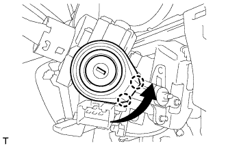

ЛАМПА ПОДСВЕТКИ ЗАМКА ЗАЖИГАНИЯ > УСТАНОВКА |
| 1. УСТАНОВИТЕ УСИЛИТЕЛЬ ЭЛЕКТРОННОГО КЛЮЧА ЗАЖИГАНИЯ |
|  |
Подсоедините разъем.
Поверните усилитель электронного ключа, как показано на рисунке, чтобы ввести в зацепление 2 захвата и установить усилитель электронного ключа.
Закрепите крышку винтом.
| 2. УСТАНОВИТЕ ВЕРХНИЙ КОЖУХ РУЛЕВОЙ КОЛОНКИ |
Введите в зацепление захват, чтобы закрепить верхний кожух рулевой колонки.
Введите в зацепление 4 фиксатора, чтобы закрепить верхний кожух рулевой колонки на облицовке панели управления.
| 3. УСТАНОВИТЕ НИЖНИЙ КОЖУХ РУЛЕВОЙ КОЛОНКИ |
Введите в зацепление 2 захвата и закрепите нижний кожух рулевой колонки.
Заверните 2 винта.
| 4. УСТАНОВИТЕ ОБЛИЦОВКУ ПАНЕЛИ УПРАВЛЕНИЯ В СБОРЕ |
Подсоедините все разъемы и все кабели.
Для моделей без подушки безопасности для защиты коленей:
Установите нижнюю отделочную накладку панели приборов и закрепите ее 7 фиксаторами.
Для моделей с подушкой безопасности для защиты коленей:
Установите нижнюю отделочную накладку панели приборов и закрепите ее 14 фиксаторами.
Вверните 2 болта <C>.
Введите в зацепление 2 захвата, чтобы закрыть крышку.
| 5. УСТАНОВИТЕ НИЖНЮЮ ОТДЕЛОЧНУЮ НАКЛАДКУ ПАНЕЛИ ПРИБОРОВ |
Подсоедините все разъемы.
Установите отделочную накладку панели приборов и закрепите ее 4 фиксаторами.
| 6. УСТАНОВИТЕ ДЕКОРАТИВНЫЙ ЭЛЕМЕНТ ОБЛИЦОВКИ ПАНЕЛИ УПРАВЛЕНИЯ (для моделей с левосторонним рулевым управлением) |
Установите декоративный элемент отделочной накладки панели приборов и введите в зацепление 3 фиксатора.
| 7. УСТАНОВИТЕ ОБЛИЦОВКУ ОТДЕЛОЧНОЙ НАКЛАДКИ ПАНЕЛИ ПРИБОРОВ (для моделей с правосторонним рулевым управлением) |
Подсоедините все разъемы.
Установите облицовку отделочной накладки панели приборов и закрепите ее 4 фиксаторами.
| 8. УСТАНОВИТЕ ЛЕВУЮ БОКОВУЮ ПАНЕЛЬ ПРИБОРОВ |
Введите в зацепление 5 фиксаторов, захват и 3 направляющие, чтобы установить боковую панель приборов.